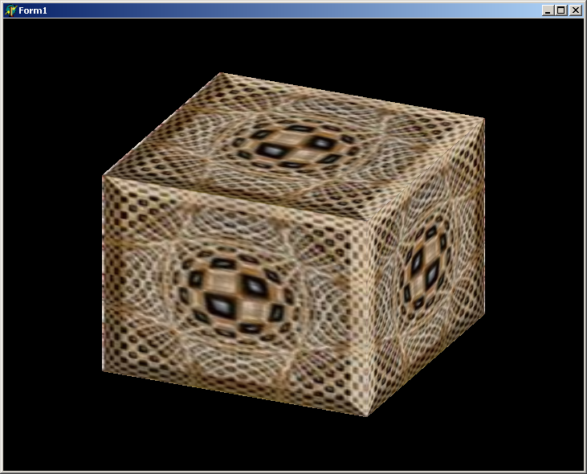
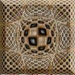

Textury
- Tvorba textúry z obrázka
- Texturovanie je ofarbenie stien trojrozmerných telies nanesením dvojrozmerných rastrových
obrazcov. Tento postup bol navrhnutý aby umožňoval grafické efekty bez veľkého zaťaženia
grafického systému. Textúry môžu byť
- jednorozmerné - sem patria farebné prechody (majú len šírku)
- dvojrozmerné - sem patria zosnímané obrázky a tiež vypočítané textury (fraktály)
(majú šírku a výšku)
- trojrozmerné
(majú šírku, výšku a hĺbku)
Ukážeme si ako položiť textúry na steny kocky. Najťažšie je načítať obrázok do špeciálnej dátovej štruktúry, ktorú potrebuje príkaz
glTexImage2D. Pre C++ existuje viacero loaderov, ktoré do tejto dátovej štruktúry vedia načítať obrázky rôznych typov,
ale je možné si to urobiť aj vo vlastnej réžii. Tu si ukážeme ako načítať obrázok typu *.bmp bez špeciálneho softu. Využijem znalosť
jednoduchej štruktúry bmp súboru. Každý 24-bit bmp súbor má hlavičku pevnej dĺžky 54B, kde má zapísané okrem iného napr. rozmer obrázka.
Mohli by sme údaje o šírke resp. výške z hlavičky aj načítať ale budeme využívať, že program vie aký rozmer náš obrázok má.
V prvej úlohe urobíme kocku, kde na všetkých stenách bude rovnaký obrázok
- zoženiem si podľa možnosti štvorcový obrázok
- upravím ho na veľkosť 256x256 alebo 128x128 (orezaním, prevzorkovaním) napr. v programe IrfanView)
- vytvorím si globálnu premennú bmp128
char bmp128[128][128][3]; //resp bmp256[256][256][3]
sem potrebujem dať pre každý pixel obrázka množstvo farieb R,G,B.
- Otvorím súbor s obrázkom (vytvorím premennú typu FILE a otvorím ho na čítanie)
FILE *f =fopen("images2.bmp","r");
- naplním pole bmp128
fread(bmp,54,1,f); // načítam celú hlavičku obrázka a zahodím ju, kurzor sa presunie na začiatok dát
fread(bmp,128*128*3,1,f); //a obrázok je načítaný, pod win je ale problém, že farby sú zapísané v tvare bgr a nie rgb
- Teraz zapneme texturu a nastavíme parametre textury
glEnable(GL_TEXTURE_2D);
glTexParameteri(GL_TEXTURE_2D,GL_TEXTURE_MAG_FILTER,GL_linear);
glTexParameteri(GL_TEXTURE_2D,GL_TEXTURE_MIN_FILTER,GL_linear);
- Určíme, ktorá textúra sa bude zobrazovať
glTexImage2D(GL_TEXTURE_2D,
0, //to je číslo textúry (ak je jedna dáme 0)
3, //počet farieb (ak nedávame priesvitnosť dáme vždy 3)
128, //rozmer textury -šírka
128, //rozmer textury -výška
0,
GL_BGR_EXT, // musíme prehodiť poradie farieb, štandartne sa dáva GL_RGB
GL_UNSIGNED_BYTE,
@bmp); //adresa dát kde je textúra načítaná
- a môžeme dať vykresliť
glBegin(GL_QUADS);
glTexCoord2f(0.0,0.0);glVertex3f(-0.5,-0.5,0.5);
glTexCoord2f(0.0,1.0);glVertex3f(-0.5,0.5,0.5);
glTexCoord2f(1.0,1.0);glVertex3f(0.5,0.5,0.5);
glTexCoord2f(1.0,0.0);glVertex3f(0.5,-0.5,0.5);
glEnd();
SwapBuffers(DC);
Celý program bude vyzerať asi takto (v texte je vykreslená len predná stena).

Použitá textúra:

Ak využijeme tento postup, môžme v programe použiť jednu obrázkovú textúru, počet manuálnych prechodových textúr nie je obmedzený.
V ďalšej časti si ukážeme ako vytvoriť v jednom programe viac obrázkových textúr (napr. na každú stenu kocky inú).